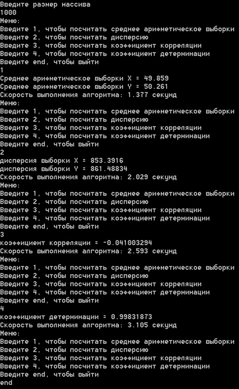

Приложение A.D.C.D.
Average Dispersion Correlation Determination
О приложении
A.D.C.D. - консольное приложение для расчета: среднего арифметического, дисперсии, коэффициента корреляции и коэффициента детерминации.
Преимущества приложения
Удобство использования
Компактный и понятный интерфейс
Быстрота проведения расчётов